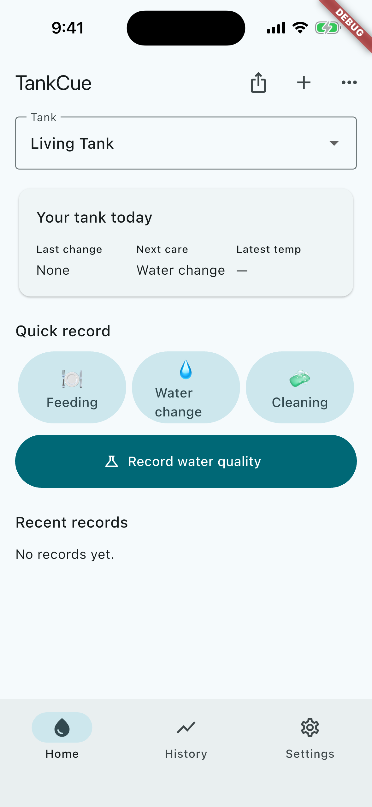
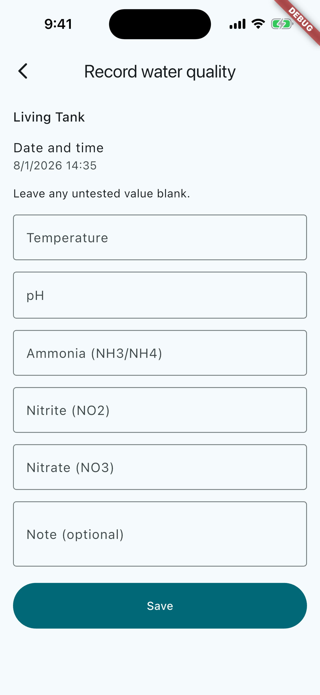
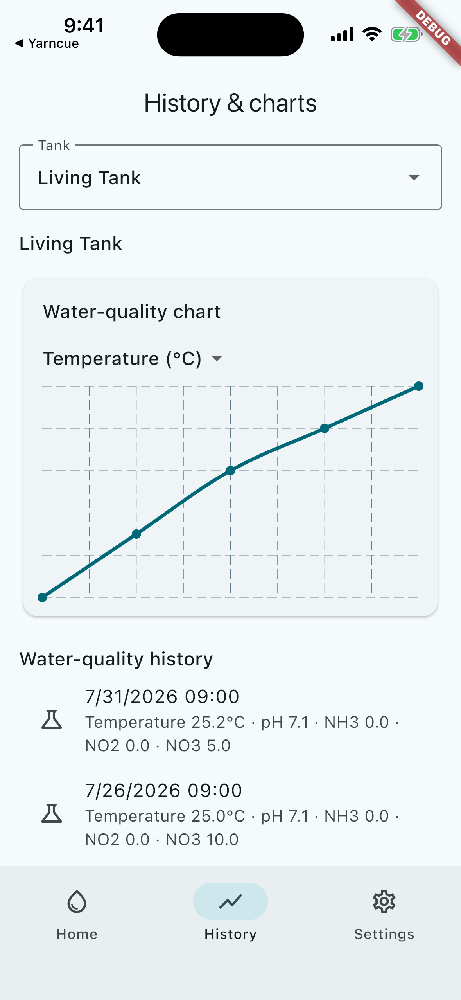
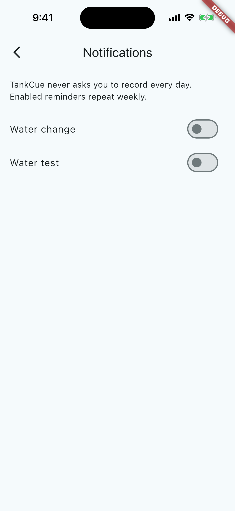

Free to get started, a simpler way to care for your aquarium
Log water changes, feeding, cleaning, and water quality. Review your tank’s changes with history and charts.
Free download · No sign-in required

Can you remember your last water change?
TankCue helps you keep a calm, useful record of everyday freshwater aquarium care.
TankCue is a simple notebook for your aquarium.
Water changes, feeding, and cleaning. Log them in a few taps.
Keep each task with its date, time, and optional note.
Feeding · Water changes · Cleaning
See how your tank changes with history and charts.
Track temperature, pH, ammonia, nitrite, and nitrate. Save only the values you measured.
Temperature · pH · Ammonia · Nitrite · Nitrate
Remember the next task, with every tank organized.
Weekly reminders and multiple tanks keep care in one place.

Take your records with you whenever you need them.
Export care history and water-quality data as CSV files.
CSV · Keep your records portable
A free-to-start notebook for freshwater aquarium care.
Core aquarium-recording features are available for free. An optional one-time purchase removes advertising.
Get started for free →Frequently asked questions
Yes. You can download TankCue for free and use the core aquarium-recording features. An optional one-time purchase removes advertising.
No. You can use TankCue without an account or sign-in.
Temperature, pH, ammonia, nitrite, and nitrate.
Yes. Care and water-quality history is organized by tank.
Yes. Your records can be exported as CSV files.
Bring TankCue to your aquarium routine.
A free-to-start notebook for freshwater aquarium care.